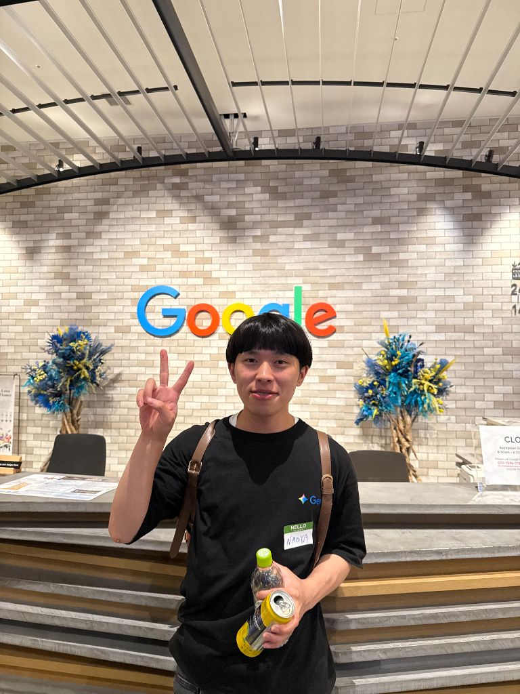

山本 直哉
Naoya Yamamoto
ZEN大学 ｜ Google 学生AIアンバサダー ｜ NewsPicks アンバサダー ｜ 積水グループアンバサダー
AIと自動化で、やりたい
ことを最短で形にする。
AI秘書や業務自動化ツールの試作からWebサイト制作まで、プロトタイプを高速で回して実装します。
企画→実装→改善までを短いサイクルで回せます。
Ask AI about Naoya
山本直哉について何でも聞いてください。AIが回答します。
この中から選んでください：v2026-02-09-1458
About
AIネイティブ世代で、とにかくAIツールを触るのが好き。
AIが好きという原動力を活かし、日々の学習と制作を加速させています。強みは、情報収集から整理、そして実装までのサイクルを短期間で回せることです。
現在は、AI秘書のようなエージェント機能を持つ自動化ツールや、誰でも更新可能なWebサイトの仕組みづくりに注力しています。
長期的には、汎用人工知能に近づく技術やプロダクトの実装に携わり続けることを目標としています。
強み
情報収集→要点抽出→意思決定の整理
リサーチ分析自動化ツールの試作（ワークフロー/AI秘書系）
自動化プロトタイピングWebサイト制作（実装→改善まで）
Web制作改善Works / Projects
Google 学生AIアンバサダー
イベント運営、参加者サポート、企画推進
優秀評価を獲得
AIサークル長（270名）
イベント企画運営、メンバー支援、運営フロー整備
30人規模のオフライン・オンラインイベントを開催
Now
- AI秘書・自動化ツールの開発
- 誰でも作れて更新できるサイト制作の仕組み化
- AI活用で学習と制作の速度を上げる
最終更新：2026年2月9日